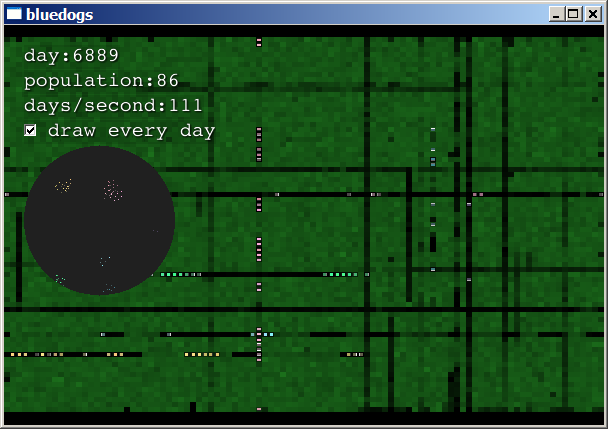
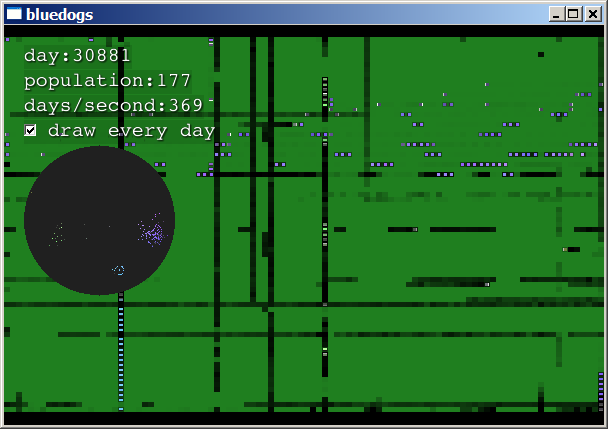
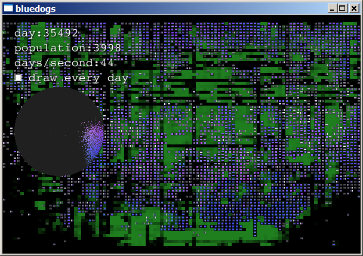
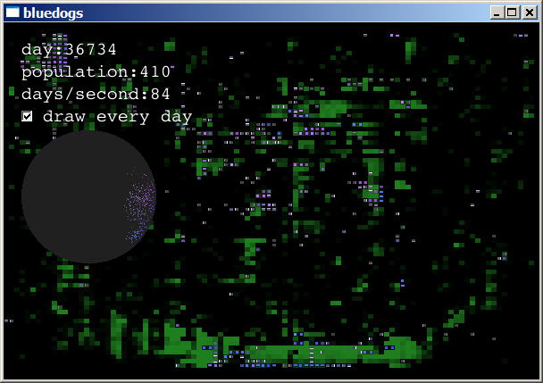
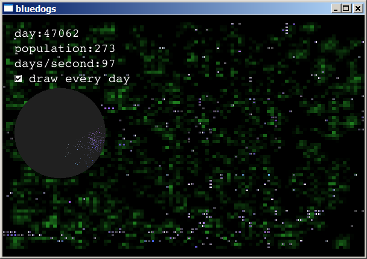

Bluedogs Artificial Life Simulation
Home
Bluedogs is a graphical program that simulates artificial life
forms. It is a rectangular world with green food that grows and
spreads. The little creatures are like bacteria. They wander around
eating food, splitting off children, and dying when their energy runs
out.
Each bacterium has a sequence of bytes that serve as instructions
for a virtual machine. These instructions determine the behavior of
the bacterium. I call the bytes the genotype. When a
bacterium reproduces, its child gets a copy of its genotype with a few
random mutations.
Screenshots
The simulation maintains at least 50 live creatures. If the
population falls below 50, it creates new creatures with random
genotypes and places them at random positions. Initially, you will
see creatures that are unable to turn. They and their
offspring eat rows through the food:

Suddenly, a creature is born that has the ability to turn! Its
offspring explode all over the world:

They fill the planet and begin consuming every resource:

When the food is consumed, they die off:

After several such boom-and-bust cycles, the creatures that survived
are those that eat slowly and reproduce less often. The simulation
usually reaches a stable state, with populations fluctuating between
200 and 1000 animals, and a moderate level of food:

Usage
Run bluedogs.exe or ./bluedogs.
Each update of the simulation is called a day. Each
bacterium has a chance to eat, move, and reproduce every day.
Normally, the screen is drawn each day of the simulation, so you can
follow the bacteria in detail. Clear the check-box to make the
program redraw the screen once a second. This provides only snapshot
views of the activity but allows the simulation to run much
faster.
The circular graph is a view into the color chooser. Every
bacterium is assigned a point in the circle. That point is translated
into polar coordinates, (θ, r). The polar coordinates are then
taken to be the Hue and Saturation values: H=θ,
S=r. Thus, each bacterium's color is determined by its position in
the circle. When a bacterium reproduces, its child is assigned a
position very nearby. The result is that families of bacteria tend to
have the same shade of color.
A bacterium's energy level is shown by its brightness. This is the
V component of the bacterium's color. See HSV Color
Space on WikiPedia.
Download
- Windows version:
Bluedogs-1.2.0.win32.zip
MD5: 00fa7838197b788e5e91f134083010d7
SHA-1: 42ab096394f1163d8fc3bc19373e8f164a2605f5
This zip file includes bluedogs.exe and all required DLLs and files.
It has been tested on Windows XP SP2.
- Unix source code:
bluedogs-1.2.0.tar.gz
MD5: 37c3e32d9da33a3777ee5cabc443c492
SHA-1: 796396604aa344848b462716a8281d9ed21790d9
Compiles with g++, SDL-1.2.11, and SDL_image-1.2.5 with PNG support.
Run make && ./bluedogs.
Change Log
2007-07-20 Version 1.2.0:
- The colors look great! :D
- Removed config data from Field, now using M_config->
- Removed cached critter head colors from View
- ColorSim draws its round background with SDL_gfxPrimitives from SDL_gfx by
Andreas Schiffler,
http://www.ferzkopp.net/joomla/content/view/19/14/
- Created DrawColorSim to show the placement of molecules
- Now View displays each critter with its molecule's color
- ColorSim keeps a molecule for every critter, position determines color
- Wrote function that determines how closely two critters are related
- Wrote code to prune and contract population tree
2007-07-14 Version 1.1.0:
- Bluedogs-1.1.0.win32.zip
MD5: 4345bb17dc5fc5c0b1b32f477b681dde
SHA-1: 0dd83957a2e62df1e6a5a835d69a5f1b348dccd9
- bluedogs-1.1.0.tar.gz
MD5: 2cdf2ca1617cb63917d9ae106d9d8b7d
SHA-1: 3200f60488f74af5e48756a68198662761cb51d6
- Prepared class structure for addition of family tree and dynamic coloring
- Added checkbox to main screen with "draw every day" label. USABILITY!
- Make checkbox class with label
- Sim now handles creature updates and death, using linked list
- Split Sim into Sim & Field classes
- Replace constants with passed parameter
- Field::M_food is now deleted properly with delete[] M_food
See: http://www.matasano.com/log/663/
- Fixed error in growFood() where first cells didn't grow as fast as others
2007-07-06 Version 1.0.0:
- Bluedogs-1.0.0.win32.zip
MD5: 56be5d58be649685cf3fed057a35a502
SHA-1: 6bfcacab06bbdeab25c946c285ca8a96ce2c4790
- bluedogs-1.0.0.tar.gz
MD5: fe281dc7113efaa3d3669f5c93579c87
SHA-1: e1fe972ce6c79446ba33a8569aeb2ce1057c64b3
- Created LICENSE file with the "MIT License"
- Created Makefile for building on unix. Thanks to
Orborde
in ##crypto@freenode for help with this.
- Double-check object deletions, make sure it happens only once
- Document methods in JavaDoc format
- Click on rate printout to switch between fast and slow
rendering
- Added faint black background to font
- Added disabled copy constructors to Critter, Bacteria, and Field.
All classes which are unsafe for default copy constructors are now
protected.
- Check passing of objects, make sure that objects are passed by
pointer or reference, not by value
- Add constructors and destructors
- Rewrite README file
- Move accessors out of header file
- Fixed filenames in headers
- Updated copyright in headers
- Created build.bat, now I can build in emacs on Windows
- Imported into cvs
Older Versions 2003-2005:
- Download old versions from old/
- Made proper display model
- removed quad trees and replaced with big array of pointers
- Create text display class that has full alphabet, numbers, and
symbols
- implement bacteria-like reproduction (splitting...
mitosis?)
- implement sexual reproduction
- Fixed Makefile compiler options to disable assertions
-DNDEBUG
- Critter now inherits from ListNode
- Population now inherits from QuadNode, reduced lookup from O(N) to
O(log N)?)
- Implemented linked list class, ListNode (in trees.cc and
trees.hh)
- Implemented Quad-Tree class, QuadNode (in trees.cc and
trees.hh)
- Add on-screen statistics:
- Date
- FPS (cycles per second)
- Number of living critters
- Make Critter class easily extended (for BlueDog, Predator,
etc.)
- Weed out unneeded inclusions from each file
- Encapsulate all code in classes
- Learn C++ Exception syntax and implement it with SDL class
- Change display of bluedogs to blue boxes with arrows for direction
(it turns out to just be a bar for the head)
License
Copyright © 2007 Michael Leonhard
Permission is hereby granted, free of charge, to any person obtaining a copy
of this software and associated documentation files (the "Software"), to deal
in the Software without restriction, including without limitation the rights
to use, copy, modify, merge, publish, distribute, sublicense, and/or sell
copies of the Software, and to permit persons to whom the Software is
furnished to do so, subject to the following conditions:
The above copyright notice and this permission notice shall be included in
all copies or substantial portions of the Software.
THE SOFTWARE IS PROVIDED "AS IS", WITHOUT WARRANTY OF ANY KIND, EXPRESS OR
IMPLIED, INCLUDING BUT NOT LIMITED TO THE WARRANTIES OF MERCHANTABILITY,
FITNESS FOR A PARTICULAR PURPOSE AND NONINFRINGEMENT. IN NO EVENT SHALL THE
AUTHORS OR COPYRIGHT HOLDERS BE LIABLE FOR ANY CLAIM, DAMAGES OR OTHER
LIABILITY, WHETHER IN AN ACTION OF CONTRACT, TORT OR OTHERWISE, ARISING FROM,
OUT OF OR IN CONNECTION WITH THE SOFTWARE OR THE USE OR OTHER DEALINGS IN
THE SOFTWARE.
(This is known as the MIT License.)
Home
Copyright © 1999-2012 Michael Leonhard